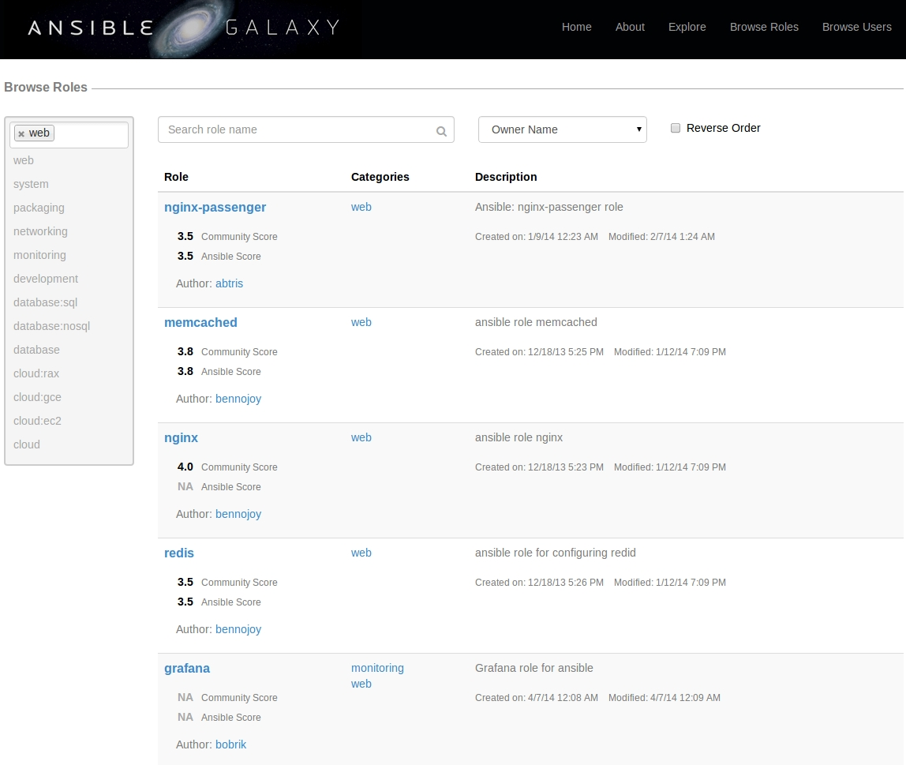
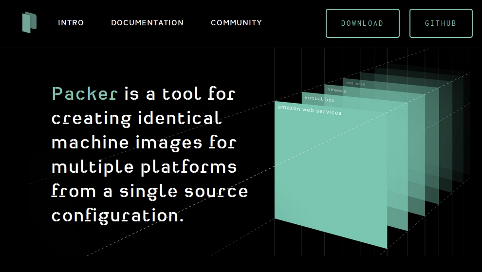

Packer.IO with Ansible
How to Stay Sane With Multiple Dev Environments
Yoriyasu Yano
Captricity Dev: Status Quo

|
|
| 12.04 & 13.10 | |
What's wrong?
- Different packages in different environments
- Not shared
- Unreproducible
What's wrong?
|
|
→ | |
| ↓ | ↘ | |
What's wrong?
sudo apt-get install nodejs
sudo brew install node
sudo port install nodejs
What do we do?
- Unify dev environment
- Unify Setup with Configuration Management Tool
Configuration Management Tools
- Repeatable
- Automated
- Documentation for installation/setup
Ansible
Ansible
- Implemented in python
- YAML configuration
- Simple execution: SSH + Shell
- Agent-less install and deploy => Excellent performance
- Ever expanding playbook library
Ansible
Ansible
---
- hosts: all
tasks:
- name: Install node.js
apt: pkg=nodejs update_cache=yes
sudo: yes
Ansible
When adding a new package or build step, simply update the playbook and check it back into repo
---
- hosts: all
tasks:
- name: Install node.js
apt: pkg=nodejs update_cache=yes
sudo: yes
+ - name: Install grunt CLI
+ command: npm install -g grunt-cli
+ sudo: yes
Ansible
Problems
- Playbook OS dependent
- Relatively young: core modules are still being fleshed out
- YAML syntax takes getting used to
- Custom commands difficult to make idempotent
Virtualbox and AWS
Packer.IO
Packer.IO
Basic Structure
{
"variables": "USER DEFINED VARIABLES (WITH DEFAULTS)",
"provisioners": "LIST OF PROVISIONERS",
"builders": "LIST OF BUILDERS",
"post-processors": "LIST OF POST PROCESSORS"
}
Packer.IO
Provisioners
{
"provisioners": [{
"type": "shell",
"script": "bootstrap_ansible.sh",
"execute_command": "chmod +x {{ .Path }}; {{ .Vars }} sudo -E {{ .Path }}"
},
{
"type": "ansible-local",
"playbook_file": "dev.yml"
}],
// ... snip ...
}
Packer.IO
AWS EC2 AMI
{
// ... snip ...
"variables": {
"aws_access_key": "",
"aws_secret_key": ""
},
"builders": [{
"type": "amazon-ebs",
"access_key": "{{user `aws_access_key`}}",
"secret_key": "{{user `aws_secret_key`}}",
"region": "us-west-2",
"source_ami": "ami-fa9cf1ca",
"instance_type": "m3.medium",
"ssh_username": "ubuntu",
"ami_name": "packer-example {{timestamp}}"
}],
// ... snip ...
}
Packer.IO
Virtualbox + Vagrant post processor
{
// ... snip ...
"builders": [{
"type": "virtualbox-ovf",
"source_path": "box.ovf",
"format": "ovf",
"ssh_username": "vagrant",
"ssh_password": "vagrant",
"ssh_port": 22,
"ssh_wait_timeout": "60m",
"shutdown_command": "echo 'shutdown -P now' > shutdown.sh; echo 'vagrant'|sudo -S sh 'shutdown.sh'",
"headless": true,
"vboxmanage": [
["modifyvm", "{{.Name}}", "--vram", "32"],
["modifyvm", "{{.Name}}", "--memory", "2048"],
["modifyvm", "{{.Name}}", "--cpus", "4"]
]
}],
"post-processors": [{
"type": "vagrant",
"compression_level": 3,
"only": ["virtualbox-ovf"]
}]
}
Packer.IO
Docker (just for kicks!)
{
// ... snip ...
"builders": [{
"type": "docker",
"image": "ubuntu:precise",
"export_path": "packer_demo_ubuntu_docker.tar"
}],
// ... snip ...
}
Packer.IO
packer build \
-var 'aws_access_key=foo' \
-var 'aws_secret_key=foo' \
template.json